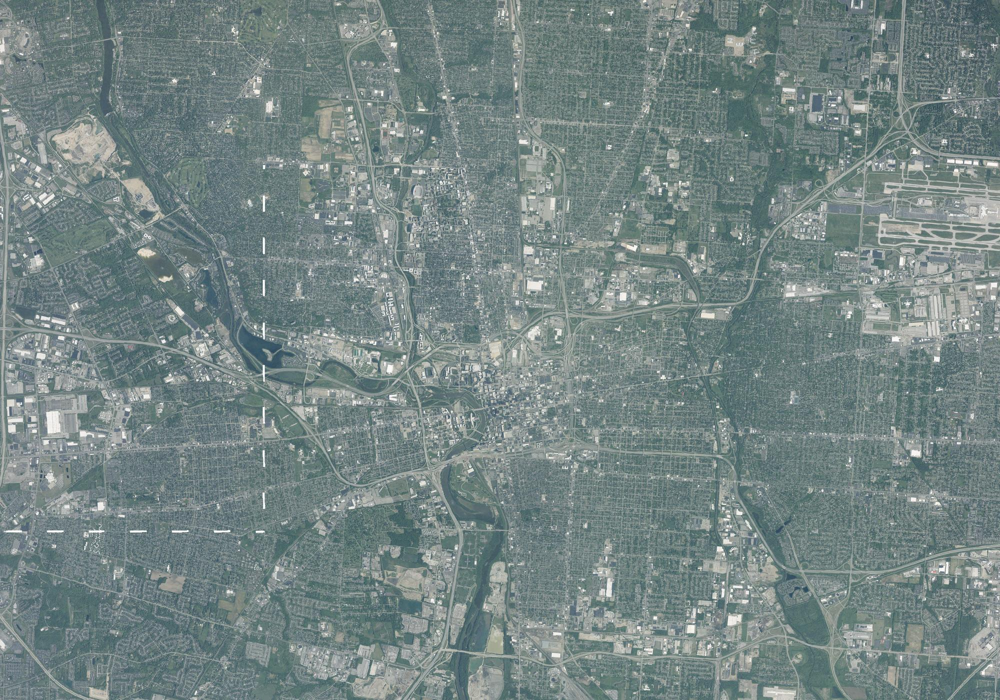

Ash Cave, Hocking Hills, Ohio
See1,Do1,Teach1 · CC BY 2.0
Original photo and license record ↗
.jpg){kind=link}
Web-sized source thumbnail; displayed with CSS cropping.
These real Ohio landscapes provide local context. They do not show the location of a purchase order, supplier or fuel delivery.
See1,Do1,Teach1 · CC BY 2.0
Original photo and license record ↗
Web-sized source thumbnail; displayed with CSS cropping.

Erik Drost · CC BY 2.0
Original photo and license record ↗
Web-sized source thumbnail; displayed with CSS cropping.

Pbalson8204 · Public domain
Original photo and license record ↗
Web-sized source thumbnail; displayed with CSS cropping.

Public-domain aerial imagery from USGS The National Map and the USDA National Agriculture Imagery Program.
Map extent: 83.12° W–82.88° W, 39.91° N–40.035° N. Geographic context only; no delivery or supplier locations are mapped.
DM Sans and IBM Plex Mono, under the SIL Open Font License. License texts are included with the font files. The existing GSAP 3.12.5, ScrollTrigger 3.12.5, Lenis 1.3.17 and Swiper 8.4.7 libraries are bundled locally, with their original license notices retained.